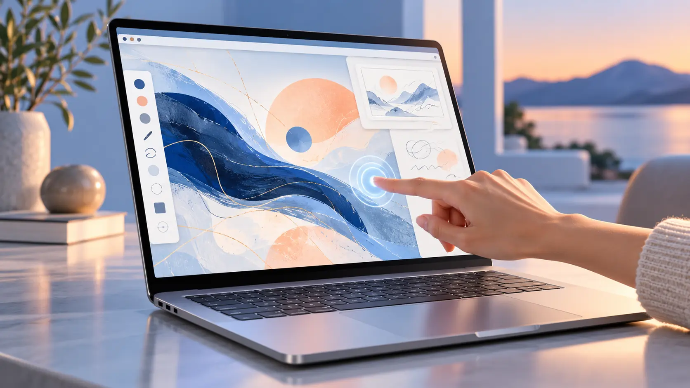

Computers · Field note 022
macOS code keeps the touchscreen MacBook possibility alive
New gesture references in Safari, Notes, and Quick Look may serve both improved iPad control and a future touch-enabled MacBook Pro.

Apple’s software is learning more touch gestures, but the screen receiving them remains the open question.
References found in macOS 27.2 beta 3 point to new touch-aware behavior in several system apps. Notes contains an “ICTouchPressGestureRecognizer,” Quick Look references a “dragTouch” capability, and Safari includes a “touch sentinel recognizer.”
Code names are not product announcements, and these additions could be intended for more than one kind of device. The immediate explanation is Sidecar, which already lets an iPad act as a Mac display and accept touch input. More precise, app-specific gestures would make that experience feel less like remote control and more like direct manipulation.
One foundation, two possible uses
The same work could also support the long-rumored touchscreen MacBook Pro. Building touch recognition into core apps now would let Apple improve Sidecar while preparing macOS software for hardware that has not been announced.
That dual purpose is important because a touchscreen Mac would need more than a touch-sensitive panel. Safari, Notes, previews, menus, and document controls would all need to respond predictably without weakening the pointer-driven desktop experience.
The beta offers clues rather than confirmation. Apple could ship the gestures solely as an iPad companion upgrade, or the code could become part of a broader transition toward touch-enabled laptops.
Either way, macOS is gaining a deeper understanding of fingers as an input method. The remaining mystery is whether Apple intends those fingers to stay on an iPad beside the Mac—or finally reach the Mac’s own display.